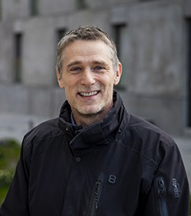

Alexandre Proutiere 🌐
Professor, KTH Royal Institute of Technology
Rank-adaptive Inference: Fundamental Limits and System Identification
Abstract
Many high-dimensional estimation problems involve matrices whose effective complexity is much smaller than their ambient dimension, but whose rank is unknown a priori. In this talk, I will present a rank-adaptive approach based on singular-value thresholding, which automatically balances the statistical cost of estimating additional singular directions against the approximation error of discarding them.
I will first discuss near-optimal guarantees and instance-dependent limits for general high-dimensional matrix estimation, and then show how the same principle leads to a rank-adaptive system identification method based on a thresholded Ho–Kalman algorithm. The resulting procedure can recover the system order and estimate its dynamics without prior knowledge of the order, while achieving finite-sample guarantees comparable to methods that know it in advance.
Joint work with Yassir Jedra (Imperial College) and Frederic Zheng (KTH).